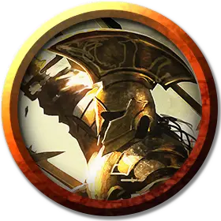

Акросский гоплит
Akroan Hoplite
Средний Гуманоид, любое мировоззрение

Класс Доспеха 18 (кираса, щит)
Хиты 52 (8к8 + 16)
Скорость 30 футов
| мод | спас | ||
|---|---|---|---|
| СИЛ | 16 | +3 | +5 |
| ЛОВ | 16 | +3 | +5 |
| ТЕЛ | 14 | +2 | +2 |
| мод | спас | ||
|---|---|---|---|
| ИНТ | 11 | +0 | +0 |
| МДР | 14 | +2 | +2 |
| ХАР | 13 | +1 | +1 |
Чувства пассивное Восприятие 12
Языки Общий
Опасность 3 (700 опыта)
Бонус мастерства +2
Особенности
Держать строй. Пока гоплит держит копье, другие существа провоцируют атаку гоплита, когда они приближаются к нему на расстояние 5 футов. Когда гоплит поражает существо провоцированной атакой, используя своё копье, существо дополнительно получает 4 (1к8) колющего урона, и его скорость становится равна 0 до конца его хода.
Действия
Мультиатака. Гоплит совершает три рукопашные атаки или две дальнобойные атаки.
Копье. Рукопашная или дальнобойная атака оружием: +5 к попаданию, досягаемость 5 футов или дальность 20/60 футов, одна цель. Попадание: 6 (1к6 + 3) колющего урона или 7 (1к8 + 3) колющего урона, если используется двумя руками для рукопашной атаки.
Удар щитом. Рукопашная атака оружием: +5 к попаданию, досягаемость 5 футов, одно существо. Попадание: 5 (1к4 + 3) дробящего урона. Если целью является существо Среднего размера или меньше, оно должно преуспеть в спасброске Силы Сл 13, иначе упадёт ничком.
Описание
Акросские гоплиты, также называемые стратианами, входят в число самых свирепых солдат Тероса. Они неустанно тренируются и обладают непоколебимой решимостью. В летописях Акроса много рассказов об отрядах стратианцев, которые защищали ключевую позицию от превосходящих сил или прокрадывались в тыл врага и сеяли хаос в армии противника.
Гоплиты
Гоплиты - это высококвалифицированные воины, сведущие не только в стратегии и тактике, но и в прославлении духа воина, основы идеала, который создает нерушимую связь между членами воинского подразделения. В бою гоплиты обычно работают группами и используют скоординированную тактику, чтобы одерживать победы.
В таблицах "Отряды гоплитов" представлены виды названий, используемых отрядами гоплитов, родом из великих полисов Тероса. Подумайте об использовании этих названий для вооружённых сил, с которыми персонажи сталкиваются во время своих приключений или частью которых они когда-то были.
Названия отрядов Акроанских гоплитов
| к8 | Название |
| 1 | Копья Ироя |
| 2 | Железные Клыки |
| 3 | Стрелы Анакса |
| 4 | Несломимые |
| 5 | Наковальня Пирфора |
| 6 | Пронзающий отряд |
| 7 | Щит Акроса |
| 8 | Сердце Кимеды |